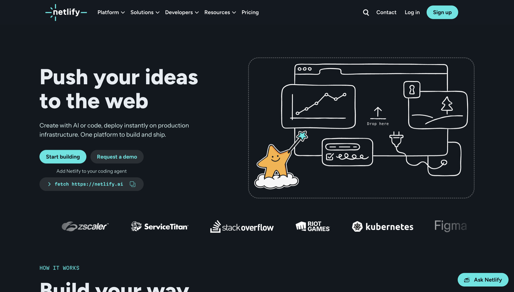
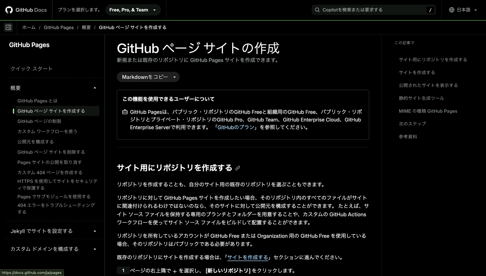
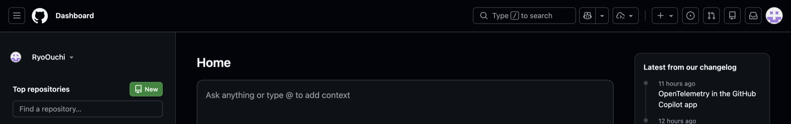
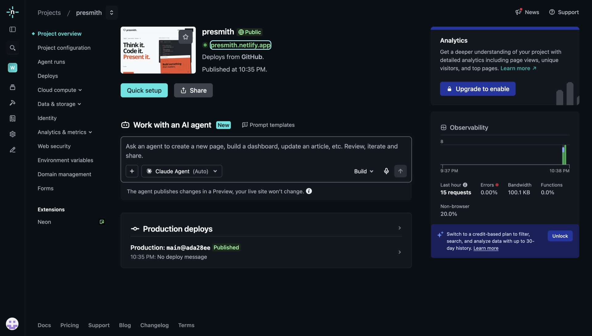

CHAPTER 01
ランディングページを作る
ランディングページは、サービスの第一印象を決める大切なページです。こだわって作りましょう！
新しいチャットを作る
プロジェクトのソースコードを参考にしてランディングページを作れるように、Codexで対象のプロジェクト内に新しいチャットを作りましょう。
今回は「Presmith」というサービスのLPを作るので、Presmithプロジェクト内に新しいチャットを作成します。
参考にしたいLPを探す
まずは、参考にしたいランディングページを探しましょう。ChatGPTに次のように送ると、デザインや構成の参考になりそうなLPを探してくれます。
ChatGPTに送るプロンプト
iPhoneアプリのランディングページ（LP）を作りたいです。
デザインや構成の参考になりそうなLPをいくつか紹介してください。今回は「Deno」というサービスのLPを参考にします。
プロンプトを書いて、LPを作る
以下のプロンプトにある https://deno.com/ を、参考にしたいサイトのURLに置き換えて、Codexに送りましょう。そのままコピー＆ペーストしてもOKです。
LPを作成するプロンプト（全文）
このサービス向けに、**そのままデプロイできる、完成度の高いランディングページ（LP）**を制作してください。
デザインの方向性は、以下のサイトを参考にしてください。
https://deno.com/
ただし、参考サイトをそのままコピーするのではなく、以下のようなデザインの考え方や雰囲気を参考にして、このサービス独自のデザインにしてください。
* 大胆でインパクトのあるタイポグラフィ
* 開発者向けプロダクトらしい洗練されたデザイン
* コードやターミナルUIを効果的に使ったビジュアル
* シンプルながら遊び心のあるレイアウト
* 十分な余白を確保した、見やすい情報設計
* スクロールするにつれてサービスの魅力が自然に伝わる構成
* 必要に応じたアニメーションやインタラクションの活用
* PC・タブレット・スマートフォンのいずれでも美しく表示されるレスポンシブデザイン
技術要件
デプロイをできるだけ簡単にするため、フレームワークや外部UIライブラリは使用せず、HTML・CSS・JavaScriptのみで実装してください。
ファイルは以下の構成にしてください。
* index.html
* style.css
* script.js
React、Vue、Next.js、Tailwind CSSなどは使用しないでください。
完成したファイルを、GitHub Pages、Cloudflare Pages、Netlify、Vercelなどの静的ホスティングサービスにそのままアップロードして公開できる状態にしてください。
デザイン・UX
単に情報を並べた一般的なSaaSのLPではなく、ひと目で印象に残るLPにしてください。
特にファーストビューは重要です。
サービス名・キャッチコピー・CTAに加えて、このサービスで何ができるのかが視覚的に伝わるデモや画像などを配置してください。
また、可能であれば、以下のようなインタラクションも外部ライブラリを使わずにJavaScriptで実装してください。
* スクロールに連動した控えめなアニメーション
* ホバーエフェクト
* ターミナルやコードのアニメーション
* CTAのインタラクション
* ナビゲーション操作に応じたスクロール
アニメーションは派手にしすぎず、サービスへの理解を助けるために使用してください。
品質
モックアップではなく、実際に公開することを前提としたLPを制作してください。
そのため、
* セマンティックHTML
* SEOを意識したmetaタグ
* OGPの基本設定
* アクセシビリティ
* レスポンシブ対応
* ホバー時・フォーカス時の適切な表示
* 高速な表示
* JavaScriptが無効でも主要な情報が読める構造
* prefers-reduced-motionへの対応
なども考慮してください。
最終的に、「テンプレート感のあるLP」ではなく、このサービス専用のデザインで、視覚的なインパクトがあり、開発者が見てワクワクするLPに仕上げてください。こちらが、このプロンプトで生成したLPです。生成したLPを確認して、必要に応じて微調整しましょう。
CHAPTER 02
ランディングページを公開する
LPを無料で公開する方法には、GitHub PagesやNetlifyなど、いくつかの選択肢があります。今回は、Netlifyでデプロイして公開する方法を紹介します。
{kind=link}

{kind=link}

作成したLPをGitHubにアップロードする
GitHubにログインして、左上にある緑色の「New」ボタンを押しましょう。
{kind=link}

リポジトリには好きな名前を付けてください。公開範囲は「Private（非公開）」でもOKです。
次に、Codexに作ってもらったファイルをGitHubにアップロードします。以下の3つのファイルが生成されているはずです。
index.htmlscript.jsstyle.cssファイルの場所がわからないときは、Codexに聞いてみてください。画像などを使っている場合は、その素材もフォルダ構成を保ってアップロードします。
- 「upload an existing file（既存のファイルをアップロード）」を押します。
- 「choose your files」を押して、Codexに作ってもらったファイルを選択し、アップロードします。
- 最後に「Commit changes」ボタンを押してコミットします。
Netlifyにサインインする
GitHubアカウントを使って、Netlifyにサインインしましょう。右上の「Sign Up」ボタンを押してから、「Sign Up With GitHub」を選びます。
新しいプロジェクトを追加する
右上の「Add new Project」ボタンを押しましょう。次に、「Import a Git repository」の選択肢の先頭にある「GitHub」を選びます。
デプロイして、公開したLPを確認する
- ステップ1で作成したリポジトリを探して選びます。
- 「Project name（プロジェクト名）」に、自分のアプリの名前を入力します。
- 一番下にあるデプロイボタンを押します。動画では「Deploy presmith」と表示されています。
{kind=link}

画像のように緑色で表示されたら、デプロイ完了です。
緑色の <設定した名前>.netlify.app のリンクを押すと、公開したWebサイトを開けます。